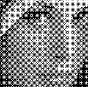

, Sameer Ghokale, U. B. Desai
, Sameer Ghokale, U. B. Desai Department of Electrical Engineering
Indian Institute of Technology - Bombay,
Powai, Bombay 400 076. (India)
K. Sunil Kumar, P. K. Nanda, Sameer Ghokale, U. B. Desai
Department of Electrical Engineering
Indian Institute of Technology - Bombay,
Powai, Bombay 400 076. (India)
Image estimation from images degraded by noise and image capturing nonlinearities is one of the important early vision problems addressed richly in literature for monochrome images. Color images carry information in addition to the intensity (which is the only cue embedded in a monochrome image) in the form of hue and saturation. The extra cues help in distinguishing objects in an image which may not be possible in a monochrome image. Recent studies focus on devising various strategies and methodologies in the context of color image processing (for example see [1]-[6]).
In this paper, we model the image by a Markov Random Field (MRF) and assume the degradation is due to additive white Gaussian noise. Here we address the problem of color image restoration in a multiresolution framework. The parameters (clique parameters , , noise variance ) describing the model are assumed to be unknown and hence need to be estimated. These parameters are estimated using a conditional pseudolikelihood function and the homotopy continuation method along the lines of [10] for a monochrome image. The color image restoration problem is posed as a maximum apostoriori (MAP) estimation problem in a multiresolution framework. Simulated Annealing algorithm [9] is used to obtain the MAP estimate at each resolution.
There are several color coordinate systems (for example RGB, HSV, YIQ, Ohta's ) used to represent a color image. Based on various experiments performed with color differencing schemes [5], [8], for color image restoration we conclude that the RGB and , , (Ohta et al[4]) color coordinate systems are best suited for color image restoration. In this paper we only experiment with the RGB color coordinate system.
The organization of the paper is as follows: Section 2 describes the problem formulation in the context of color image restoration and parameter estimation. Section 3 describes the scheme adopted and the algorithm used in this paper, which is followed by a section on experimental results in Section 4. We conclude in Section 5.
Let , ,  be the image to be restored, the observed image and
the noise field respectively at resolution and defined on a square lattice of size
. Let
be the image to be restored, the observed image and
the noise field respectively at resolution and defined on a square lattice of size
. Let  =
= + for be
the degradation model. We can write the degradation model in the vector form by
stacking the rows of the image in the lexicographical order as =
+ for be
the degradation model. We can write the degradation model in the vector form by
stacking the rows of the image in the lexicographical order as = +.
Here, the color image
+.
Here, the color image  consists of three components,
consists of three components,  = [ ,
= [ ,  , ,
corresponding to the components of some color coordinate system, for example
, ,
corresponding to the components of some color coordinate system, for example
 could correspond to red, to green and
could correspond to red, to green and  to blue in the
RGB color coordinate system. Each pixel (q=1,2,3) takes a value
from a finite set
to blue in the
RGB color coordinate system. Each pixel (q=1,2,3) takes a value
from a finite set  . We make the following assumptions
. We make the following assumptions
 is statistically independent of ,
for all
is statistically independent of ,
for all  and
and  belonging to , where .
belonging to , where .
The noise free image
 is modeled as a MRF, with
is modeled as a MRF, with  ,
, C represents the set of cliques,
,
, C represents the set of cliques,
 the set of clique parameters, and is a realization
of
the set of clique parameters, and is a realization
of  and is the clique potential.
In general, the parameter vector
and is the clique potential.
In general, the parameter vector  would consist of the clique
parameters ,
and the additive noise variance
would consist of the clique
parameters ,
and the additive noise variance  ; .
Z is the partition function and is defined as .
In particular we consider the following energy function:
; .
Z is the partition function and is defined as .
In particular we consider the following energy function:
where , and
if , and
 if .
In our simulation work we use
if .
In our simulation work we use
This amounts to deciding the presence or absence of the line field on the color coordinate .
It can be shown that the posterior energy function corresponding to the posteriori probability , is
where, and are the unknown parameters that have to be estimated. If the parameters are known, restoration is achieved by minimizing with respect to .
We assume the additive noise model along with the assumptions given in
Section 2.1. We consider the case where both the
model parameters  and the original image
and the original image  are unknown.
The general problem of joint parameter estimation and image restoration is based on the
following optimality criterion -
are unknown.
The general problem of joint parameter estimation and image restoration is based on the
following optimality criterion -
Observe that both
 and
and  need to be estimated
to satisfy the optimality criterion of (4);
this is an unsolved problem. Nevertheless, the
problem is tackled by splitting it into two problems, namely,
need to be estimated
to satisfy the optimality criterion of (4);
this is an unsolved problem. Nevertheless, the
problem is tackled by splitting it into two problems, namely,
and
The superscript k represents the
iteration number.
Equation (5) is the color image restoration problem
given the parameters  and the noisy image
and the noisy image  , while (6)
is the parameter estimation problem.
, while (6)
is the parameter estimation problem.
The probability term in (6) can be expressed as (note:  ])
])
In (7) the summation is over all possible
realizations of  . From a computational standpoint, handling
(7) would be practically impossible. One can view
(7) as a likelihood function to be maximized for estimating
. From a computational standpoint, handling
(7) would be practically impossible. One can view
(7) as a likelihood function to be maximized for estimating
 . To overcome the computational complexity and to make
the parameter estimation problem tractable ,we
approximate (7) using the conditional pseudolikelihood
function, (analogous to Besag [7]) by
. To overcome the computational complexity and to make
the parameter estimation problem tractable ,we
approximate (7) using the conditional pseudolikelihood
function, (analogous to Besag [7]) by
where and represents the neighborhood of the site  .
Equation (8) can be written using the expression for conditional probability
under the product, as
.
Equation (8) can be written using the expression for conditional probability
under the product, as
The maximization problem (6) is now replaced by
The notation means , where is the set of intensity levels for the color coordinate q.
The numerical update equation for a homotopy map can be derived as (please refer to [10] for a detailed derivation)
, where is the Jacobian of the selected homotopy map and is the homotopy parameter.
The essential feature of unsupervised parameter estimation and restoration scheme is the determination of parameters in the absence of any knowledge of the noiseless image (), and the parameters associated with the additive noise.
 , ) at various resolutions using the
algorithm proposed by Burt and Adelson [11].
We assume the image at the coarsest resolution, namely,
, ) at various resolutions using the
algorithm proposed by Burt and Adelson [11].
We assume the image at the coarsest resolution, namely,  (
( )
to be a good estimate of
)
to be a good estimate of  at
at  .
Using the
scheme proposed in Section 2.2 we estimate at
.
Using the
scheme proposed in Section 2.2 we estimate at  .
Having estimated
.
Having estimated  at , we restore the image
at , we restore the image
 at
at  in the following way
in the following way
 to be the initial estimate of
to be the initial estimate of  at
at 
 and the observed image
and the observed image  at
at
 we estimate the restored image at for
some predefined number of iterations
we estimate the restored image at for
some predefined number of iterations
 and the known
and the known  at
at  we estimate
we estimate  at
at  as described in
Section 2.2.
as described in
Section 2.2.
 )
)
Observe that
the process of parameter estimation and image restoration are interleaved all
along; also observe that we have not assumed any knowledge about  ,
except that it can be modeled as a MRF.
,
except that it can be modeled as a MRF.
for¯(coarsest to finest image)Unsupervised Parameter estimation
if¯(coarsest image)
assume the noisy image
to be the original image

and estimate
(solving (9), using (10))
else {
use the estimate (known) and estimate
the parameter
using equations in Section 2.2
by taking only a block equal to the size of the coarsest image
with sufficiently rich information }
Color Image Restoration
quad tree interpolate
minimize (3) using simulated annealing algorithm and
as estimated earlier
if (finest resolution image) Output restored image

Until(final image)
Simulation were carried out on a few real color images to validate the
proposed unsupervised multiresolution scheme for parameter estimation and image
restoration. In this paper, we give the simulation results for one image of
size  ().
().
Figure 1 shows the original face image and Figure 2 shows the additive
noise degraded face image whose SNR is dB. We present the results
for the following cases - (i) assume the apriori knowledge of the
noiseless image to estimate parameters and use them to restore at the
finest resolution ( ). Figure 3 gives the resulting restored
image (supervised parameter estimation and restoration in
monoresolution), (ii) assume the apriori knowledge of the noiseless
image to estimate parameters and use them to restore from coarsest to
finest resolution (). Figure 4 gives the resulting
restored image (supervised parameter estimation and restoration in
multiresolution), and (iii)
unsupervised, multiresolution, parameter estimation and restoration based on
the scheme proposed in Section
3.1. Figure 5 shows the resulting restored image.
The SNR's
for all the three cases have been tabulated in Table 1, and the parameters
used in each case are shown in Table 2.
). Figure 3 gives the resulting restored
image (supervised parameter estimation and restoration in
monoresolution), (ii) assume the apriori knowledge of the noiseless
image to estimate parameters and use them to restore from coarsest to
finest resolution (). Figure 4 gives the resulting
restored image (supervised parameter estimation and restoration in
multiresolution), and (iii)
unsupervised, multiresolution, parameter estimation and restoration based on
the scheme proposed in Section
3.1. Figure 5 shows the resulting restored image.
The SNR's
for all the three cases have been tabulated in Table 1, and the parameters
used in each case are shown in Table 2.
Table 1: SNR of the restored images
Table 2: Parameters estimated and used for restoring images
For the purpose of simulations, we constructed the images at various resolutions using Adelson and Burt's [11] algorithm and the simulated annealing algorithm was used for the purpose of minimizing the energy function.
The main contributions of the paper can be summarized as:
(1) Use of single line field for the apriori energy function in the MRF model for the color image. We find that it is not necessary to use three line fields corresponding to the three color coordinates as is often done in literature. (2) Development of an estimator for the parameters of the color image MRF model with line fields, and the noise variance. (3) A multiresolution framework for Step 2 as well as color image restoration. Besides achieving faster () computation this also provides improved restored color image as compared to the monoresolution scheme. Simulations were carried out only for the RGB color coordinate system. We are presently working on the degradation model to take care of blur and multiplicative noise. The results will be reported elsewhere.
Figure 1. Original Image Figure 2. Noisy Image
Figure 3. Supervised Restoration Figure 4. Supervised Restoration (Monoresolution) (Multiresolution)
 Figure 5. Unsupervised Restoration (Multiresolution)
Unsupervised Parameter Estimation Using Homotopy Continuation Method for Color Image Restoration in a Multiresolution Framework
This document was generated using the LaTeX2HTML translator Version 95.1 (Fri Jan 20 1995) Copyright © 1993, 1994, Nikos Drakos, Computer Based Learning Unit, University of Leeds.
The command line arguments were:
latex2html -split 0 /home/yaman/sameer/TEXT/ICPIC/icpic.tex.
The translation was initiated by Users Pradipta n Sunil on Mon Feb 12 20:36:27 GMT-0800 1996